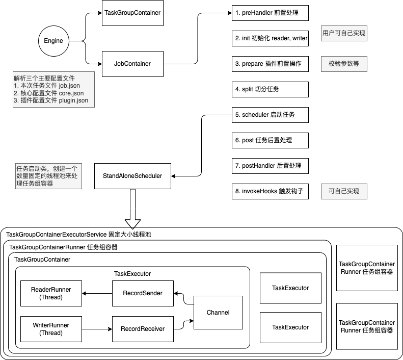

插件开发¶
本指南主要面向那些需要开发符合自己需求的 Addax 插件开发人员。
Addax 流程¶
Addax 运行一个任务的大致流程如下：

启动步骤为：
- 解析配置，包括
job.json、core.json、plugin.json三个配置 - 设置
jobId到configuration当中 - 启动 Engine，通过
Engine.start()进入启动程序 - 设置
RUNTIME_MODE到configuration当中 - 通过 JobContainer 的
start()方法启动 - 依次执行 job 的
preHandler()、init()、prepare()、split()、schedule()、post()、postHandle()等方法。 init()方法涉及到根据 configuration 来初始化 reader 和 writer 插件，这里涉及到 jar 包热加载以及调用插件init()操作方法，同时设置 reader 和 writer 的 configuration 信息prepare()方法涉及到初始化 reader 和 writer 插件的初始化，通过调用插件的prepare()方法实现，每个插件都有自己的 jarLoader，通过集成URLClassloader实现而来split()方法通过adjustChannelNumber()方法调整 channel 个数，同时执行 reader 和 writer 最细粒度的切分，需要注意的是，writer 的切分结果要参照 reader 的切分结果，达到切分后数目相等，才能满足 1：1 的通道模型- channel 的计数主要是根据 byte 和 record 的限速来实现的，在
split()的函数中第一步就是计算 channel 的大小 split()方法 reader 插件会根据 channel 的值进行拆分，但是有些 reader 插件可能不会参考 channel 的值，writer 插件会完全根据 reader 的插件 1:1 进行返回split()方法内部的mergeReaderAndWriterTaskConfigs()负责合并 reader、writer、以及 transformer 三者关系，生成 task 的配置，并且重写job.content的配置schedule()方法根据split()拆分生成的 task 配置分配生成 taskGroup 对象，根据 task 的数量和单个 taskGroup 支持的 task 数量进行配置，两者相除就可以得出 taskGroup 的数量schedule()内部通过 AbstractScheduler 的schedule()执行，继续执行startAllTaskGroup()方法创建所有的 TaskGroupContainer 组织相关的 task，TaskGroupContainerRunner 负责运行 TaskGroupContainer 执行分配的 task。scheduler 的具体实现类为ProcessInnerScheduler。taskGroupContainerExecutorService启动固定的线程池用以执行TaskGroupContainerRunner对象，TaskGroupContainerRunner 的run()方法调用taskGroupContainer. start()方法，针对每个 channel 创建一个 TaskExecutor，通过taskExecutor.doStart()启动任务。
插件机制¶
Addax 为了应对不同数据源的差异、同时提供一致地同步原语和扩展能力，采用了 框架 + 插件 的模式：
- 插件只需关心数据的读取或者写入本身。
- 而同步的共性问题，比如：类型转换、性能、统计，则交由框架来处理。
作为插件开发人员，则需要关注两个问题：
- 数据源本身的读写数据正确性。
- 如何与框架沟通、合理正确地使用框架。
插件视角看框架¶
逻辑执行模型¶
插件开发者不用关心太多，基本只需要关注特定系统读和写，以及自己的代码在逻辑上是怎样被执行的，哪一个方法是在什么时候被调用的。在此之前，需要明确以下概念：
Job: 用以描述从一个源头到一个目的端的同步作业，是数据同步的最小业务单元。比如：从一张 MySQL 的表同步到 PostgreSQL 的一个表。Task: 为最性能大化而把Job拆分得到的最小执行单元。比如：读一张有 1024 个分表的 MySQL 分库分表的Job，拆分成 1024 个读Task，用若干个并发执行。TaskGroup: 一组Task集合。在同一个TaskGroupContainer执行下的Task集合称之为TaskGroupJobContainer:Job执行器，负责Job全局拆分、调度、前置语句和后置语句等工作的工作单元。类似 Yarn 中的 JobTrackerTaskGroupContainer:TaskGroup执行器，负责执行一组Task的工作单元，类似 Yarn 中的 TaskTracker。
简而言之， Job拆分成Task，分别在框架提供的容器中执行，插件只需要实现 Job 和 Task 两部分逻辑。
编程接口¶
那么，Job 和 Task 的逻辑应是怎么对应到具体的代码中的？
首先，插件的入口类必须扩展 Reader 或 Writer 抽象类，并且实现分别实现 Job 和 Task 两个内部抽象类，Job 和 Task 的实现必须是 内部类 的形式，原因见 加载原理 一节。以 Reader 为例：
public class SomeReader
extends Reader
{
public static class Job
extends Reader.Job
{
@Override
public void init()
{
}
@Override
public void prepare()
{
}
@Override
public List<Configuration> split(int adviceNumber)
{
return null;
}
@Override
public void post()
{
}
@Override
public void destroy()
{
}
}
public static class Task
extends Reader.Task
{
@Override
public void init()
{
}
@Override
public void prepare()
{
}
@Override
public void startRead(RecordSender recordSender)
{
}
@Override
public void post()
{
}
@Override
public void destroy()
{
}
}
}
Job 接口功能如下：
init: Job 对象初始化工作，此时可以通过super.getPluginJobConf()获取与本插件相关的配置。读插件获得配置中reader部分，写插件获得writer部分。prepare: 全局准备工作，比如 MySQL 清空目标表。split: 拆分Task。参数adviceNumber框架建议的拆分数，一般是运行时所配置的并发度。值返回的是Task的配置列表。post: 全局的后置工作，比如 MySQL writer 同步完影子表后的rename操作。destroy: Job 对象自身的销毁工作。
Task 接口功能如下：
init：Task 对象的初始化。此时可以通过super.getPluginJobConf()获取与本Task相关的配置。这里的配置是Job#split方法返回的配置列表中的其中一个。prepare：局部的准备工作。startRead: 从数据源读数据，写入到RecordSender中。RecordSender会把数据写入连接Reader和Writer的缓存队列。startWrite：从RecordReceiver中读取数据，写入目标数据源。RecordReceiver中的数据来自Reader和Writer之间的缓存队列。post: 局部的后置工作。destroy: Task 对象自身的销毁工作。
需要注意的是：
Job和Task之间一定不能有共享变量，因为分布式运行时不能保证共享变量会被正确初始化。两者之间只能通过配置文件进行依赖。prepare和post在Job和Task中都存在，插件需要根据实际情况确定在什么地方执行操作。
框架按照如下的顺序执行 Job 和 Task 的接口：
stateDiagram-v2
direction TB
Init:::job --> Prepare:::job
Prepare --> Split:::job
Split --> Schedule:::fw
state Schedule {
direction LR
init\nprepare\nstartRead\npost\ndestroy1 --> init\nprepare\nstartRead\npost\ndestroy : Channel
}
Schedule --> Post:::job
classDef job fill:yellow
classDef fw fill:#c6fac4
classDef ctask fill:blue上图中，黄色表示 Job 部分的执行阶段，灰色表示 Task 部分的执行阶段，绿色表示框架执行阶段。
相关类关系如下：
%%{init: {"theme": "neutral"}}%%
classDiagram
class Pluginable {
+ init()
+ destroy()
+ others()
}
class AbstractPlugin {
+ prepare()
+ post()
+ others()
}
class AbstractJobPlugin {
+ getJobPluginCollector(): JobPluginCollector
+ setJobPluginCollector(JobPluginCollector)
}
class AbstractTaskPlugin {
+ getTaskPluginCollector(): TaskPluginCollector
+ setTaskPluginCollector(TaskPluginCollector)
}
class Reader_Job {
+ split(init): List<<Configuration>>
}
class Writer_Job {
+ split(init): List<<Configuration>>
}
class Reader_Task {
+ startRead(RecordSender)
}
class Writer_Task {
+ startWrite(RecordReceiver)
}
AbstractJobPlugin <|-- Reader_Job
AbstractJobPlugin <|-- Writer_Job
AbstractTaskPlugin <|-- Reader_Task
AbstractTaskPlugin <|-- Writer_Task
AbstractPlugin <|-- AbstractJobPlugin
AbstractPlugin <|-- AbstractTaskPlugin
Pluginable <|-- AbstractPlugin
插件定义¶
在每个插件的项目中，都有一个plugin.json文件，这个文件定义了插件的相关信息，包括入口类。例如：
{
"name": "mysqlwriter",
"class": "com.wgzhao.addax.plugin.writer.mysqlwriter.MysqlWriter",
"description": "Use Jdbc connect to database, execute insert sql.",
"developer": "wgzhao"
}
name: 插件名称，大小写敏感。框架根据用户在配置文件中指定的名称来搜寻插件。 十分重要 。class: 入口类的全限定名称，框架通过反射创建入口类的实例。十分重要 。description: 描述信息。developer: 开发人员。
打包发布¶
Addax 使用 assembly 打包，打包命令如下：
mvn clean package
mvn package assembly:single
Addax 插件需要遵循统一的目录结构：
${ADDAX_HOME}
├── bin
│ ├── addax.sh
├── conf
│ ├── core.json
│ └── logback.xml
├── job
├── lib
│ ├── addax-common-<version>.jar
│ ├── addax-core-<version>.jar
│ ├── addax-rdbms-<version>.jar
│ ├── addax-storage-<version>.jar
├── log
├── plugin
│ ├── reader
│ │ ├── cassandrareader
│ │ │ ├── cassandrareader-<version>.jar
│ │ │ ├── libs
│ │ │ │ ├── <symbol link to shared folder>
│ │ │ ├── plugin.json
│ │ │ └── plugin_job_template.json
│ └── writer
│ ├── cassandrawriter
│ │ ├── cassandrawriter-<version>.jar
│ │ ├── libs
│ │ │ ├── <symbol link to shared folder>
│ │ ├── plugin.json
│ │ └── plugin_job_template.json
├── shared
${ADDAX_HOME}/bin: 可执行程序目录${ADDAX_HOME}/conf: 框架配置目录${ADDAX_HOME}/lib: 框架依赖库目录${ADDAX_HOME}/shared: 插件依赖目录${ADDAX_HOME}/plugin: 插件目录
插件目录分为 reader 和 writer 子目录，读写插件分别存放。插件目录规范如下：
${PLUGIN_HOME}/libs: 插件的依赖库，为了减少程序包大小，这些依赖包都是指向shared目录的符号链接${PLUGIN_HOME}/plugin-name-version.jar: 插件本身的 jar。${PLUGIN_HOME}/plugin.json: 插件描述文件。
尽管框架加载插件时，会把 ${PLUGIN_HOME} 下所有的 jar 包添加到 classpath 环境变量中，但还是推荐依赖库的 jar 和插件本身的 jar 分开存放。
特别提醒
插件的目录名字必须和 plugin.json 中定义的插件名称一致。
配置文件¶
Addax 使用 json 作为配置文件的格式。一个典型的 Addax 任务配置如下：
{
"job": {
"setting": {
"speed": {
"byte": -1,
"channel": 1
}
},
"content": {
"reader": {
"name": "postgresqlreader",
"parameter": {
"username": "pgtest",
"password": "pgtest",
"column": [
"*"
],
"connection": {
"table": [
"addax_tbl"
],
"jdbcUrl": "jdbc:postgresql://localhost:5432/pgtest"
}
}
},
"writer": {
"name": "postgresqlwriter",
"parameter": {
"column": [
"*"
],
"preSql": [
"truncate table @table"
],
"connection": {
"jdbcUrl": "jdbc:postgresql://127.0.0.1:5432/pgtest",
"table": [
"addax_tbl1"
]
},
"username": "pgtest",
"password": "pgtest",
"writeMode": "insert"
}
}
}
}
}
Addax 框架有 core.json 配置文件，指定了框架的默认行为。任务的配置里头可以指定框架中已经存在的配置项，而且具有更高的优先级，会覆盖 core.json 中的默认值。
配置中job.content.reader.parameter 的 value 部分会传给 Reader.Job；job.content.writer.parameter 的 value 部分会传给Writer.Job ，
Reader.Job 和 Writer.Job 可以通过 super.getPluginJobConf() 来获取。
如何设计配置参数¶
配置文件的设计是插件开发的第一步！
任务配置中 reader 和 writer 下 parameter 部分是插件的配置参数，插件的配置参数应当遵循以下原则：
- 驼峰命名：所有配置项采用小驼峰命名法，首字母小写。
- 正交原则：配置项必须正交，功能没有重复，没有潜规则。
- 富类型：合理使用 json 的类型，减少无谓的处理逻辑，减少出错的可能。
- 使用正确的数据类型。比如，
bool类型的值使用true/false，而非"yes"/"true"/0等。 - 合理使用集合类型，比如，用数组替代有分隔符的字符串。
- 类似通用：遵守同一类型的插件的习惯，比如关系型数据库的
connection参数都是如下结构：
{
"connection": [
{
"table": ["table_1", "table_2"],
"jdbcUrl": [
"jdbc:mysql://127.0.0.1:3306/database_1",
"jdbc:mysql://127.0.0.2:3306/database_1_slave"
]
},
{
"table": ["table_3", "table_4"],
"jdbcUrl": [
"jdbc:mysql://127.0.0.3:3306/database_2",
"jdbc:mysql://127.0.0.4:3306/database_2_slave"
]
}
]
}
如何使用 Configuration 类¶
为了简化对 json 的操作，Addax 提供了简单的 DSL 配合 Configuration 类使用。
Configuration 提供了常见的 get, 带类型get，带默认值get，set 等读写配置项的操作，以及 clone, toJSON 等方法。配置项读写操作都需要传入一个 path 做为参数， 这个 path 就是 Addax 定义的 DSL。语法有两条：
- 子 map 用
.key表示，path的第一个点省略。 - 数组元素用
[index]表示。
比如操作如下 json：
{
"a": {
"b": {
"c": 2
},
"f": [
1,
2,
{
"g": true,
"h": false
},
4
]
},
"x": 4
}
比如调用 configuration.get(path) 方法，当 path 为如下值的时候得到的结果为：
x：4a.b.c：2a.b.c.d：nulla.b.f[0]：1a.b.f[2].g：true
注意，因为插件看到的配置只是整个配置的一部分。使用 Configuration 对象时，需要注意当前的根路径是什么。
更多 Configuration 的操作请参考 Configuration.java 。
插件数据传输¶
跟一般的 生产者-消费者 模式一样，Reader 插件和 Writer 插件之间也是通过 channel 来实现数据的传输的。channel 可以是内存的，也可能是持久化的，插件不必关心。 插件通过 RecordSender 往 channel 写入数据，通过 RecordReceiver 从 channel 读取数据。
channel 中的一条数据为一个 Record 的对象，Record 中可以放多个 Column 对象，这可以简单理解为数据库中的记录和列。
Record 有如下方法：
public interface Record
{
// 加入一个列，放在最后的位置
void addColumn(Column column);
// 在指定下标处放置一个列
void setColumn(int i, final Column column);
// 获取一个列
Column getColumn(int i);
// 转换为json String
String toString();
// 获取总列数
int getColumnNumber();
// 计算整条记录在内存中占用的字节数
int getByteSize();
}
因为 Record 是一个接口，Reader 插件首先调用 RecordSender.createRecord() 创建一个 Record 实例，然后把 Column 一个个添加到 Record 中。
Writer 插件调用 RecordReceiver.getFromReader() 方法获取 Record，然后把 Column 遍历出来，写入目标存储中。当 Reader 尚未退出，传输还在进行时，如果暂时没有数据 RecordReceiver.getFromReader() 方法会阻塞直到有数据。
如果传输已经结束，会返回null，Writer 插件可以据此判断是否结束 startWrite 方法。
类型转换¶
为了规范源端和目的端类型转换操作，保证数据不失真，Addax 支持六种内部数据类型：
Long：定点数(Int、Short、Long、BigInteger 等)。Double：浮点数(Float、Double、BigDecimal(无限精度)等)。String：字符串类型，底层不限长，使用通用字符集(Unicode)。Date：日期类型。Timestamp: 时间戳Bool：布尔值。Bytes：二进制，可以存放诸如 MP3 等非结构化数据。
对应地，有 DateColumn、LongColumn、DoubleColumn、BytesColumn、StringColumn 、BoolColumn 和 TimestampColumn 七种 Column 的实现。
Column 除了提供数据相关的方法外，还提供一系列以 as 开头的数据类型转换转换方法。
%%{init: {"theme": "neutral"}}%%
classDiagram
direction TB
class Column {
<<interface>>
- rawData: Object
- type: Type
+ getRawData(): Object
+ getType(): Type
+ getByteSize(): init
+ asLong(): Long
+ asDouble(): Doule
+ asString(): String
+ asDate(): Date
+ asBytes(): Bytes
+ asBigDecimal(): BigDecimal
+ asBoolean(): Boolean
}
Column <|-- Stringcolumn
Column <|-- Doublecolumn
Column <|-- Longcolumn
Column <|-- Datecolumn
Column <|-- Boolcolumn
Column <|-- BytescolumnAddax 的内部类型在实现上会选用不同的 java 类型：
| 内部类型 | 实现类型 | 备注 |
|---|---|---|
| Date | java.util.Date | |
| Timestamp | java.sql.Timestamp | 可以精确到纳秒 |
| Long | java.math.BigInteger | 使用无限精度的大整数，保证不失真 |
| Double | java.lang.String | 用 String 表示，保证不失真 |
| Bytes | byte[] | |
| String | java.lang.String | |
| Bool | java.lang.Boolean |
类型之间相互转换的关系如下：
| from/to | Date | Long | Double | Bytes | String | Bool |
|---|---|---|---|---|---|---|
| Date | - | 使用毫秒时间戳 | 不支持 | 不支持 | 按配置格式转换 | 不支持 |
| Long | 作为毫秒时间戳构造 Date | - | BigDecimal.doubleValue() |
不支持 | BigInteger.toString() |
0 为 false，其他为 true |
| Double | 不支持 | BigDecimal.longValue() |
- | 不支持 | 直接返回内部 String | 不支持 |
| Bytes | 不支持 | 不支持 | 不支持 | - | 按utf-8编码转换为 byte[] |
不支持 |
| String | 按配置的 格式解析 | BigDecimal.longValue |
BigDecimal.doubleValue1 |
按 utf-8 编码2转换为 byte[] |
- | "true"为true, "false"为false，不区分大小写。其他不支持 |
| Bool | 不支持 | true为1L，否则0L |
不支持 | true为1.0，否则0.0 |
不支持 | - |
脏数据处理¶
什么是脏数据¶
目前主要有三类脏数据：
- Reader 读到不支持的类型、不合法的值。
- 不支持的类型转换，比如：
Bytes转换为Date。 - 写入目标端失败，比如：写 MySQL 整型长度超长。
如何处理脏数据¶
在 Reader.Task 和 Writer.Task 中，通过 AbstractTaskPlugin.getPluginCollector() 可以拿到一个 TaskPluginCollector，它提供了一系列 collectDirtyRecord 的方法。 当脏数据出现时，只需要调用合适的 collectDirtyRecord
方法，把被认为是脏数据的 Record 传入即可。
用户可以在任务的配置中指定脏数据限制条数或者百分比限制，当脏数据超出限制时，框架会结束同步任务，退出。插件需要保证脏数据都被收集到，其他工作交给框架就好。
加载原理¶
- 框架扫描
plugin/reader和plugin/writer目录，加载每个插件的plugin.json文件。 - 以
plugin.json文件中name为 key，索引所有的插件配置。如果发现重名的插件，框架会异常退出。 - 用户在插件中在
reader/writer配置的name字段指定插件名字。框架根据插件的类型（reader/writer）和插件名称去插件的路径下扫描所有的 jar，加入classpath。 - 根据插件配置中定义的入口类，框架通过反射实例化对应的
Job和Task对象。